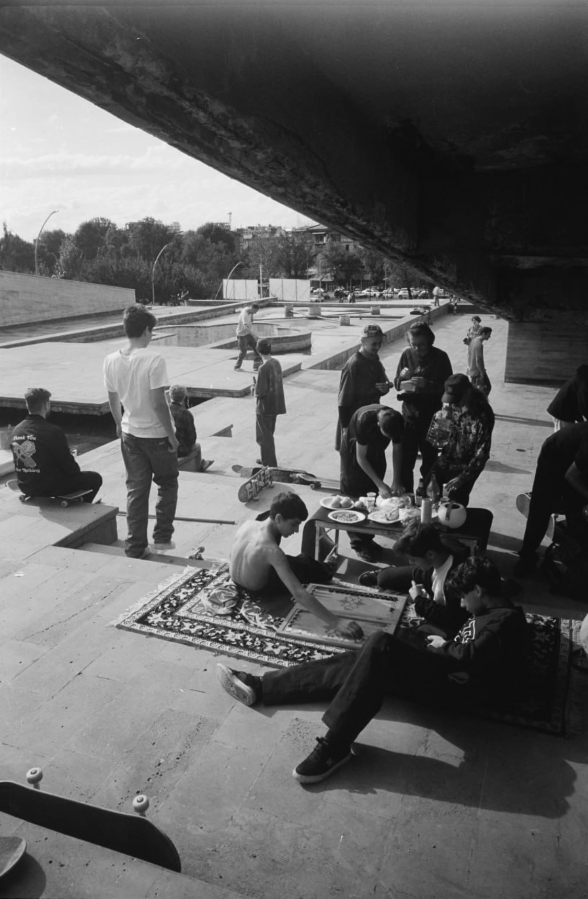
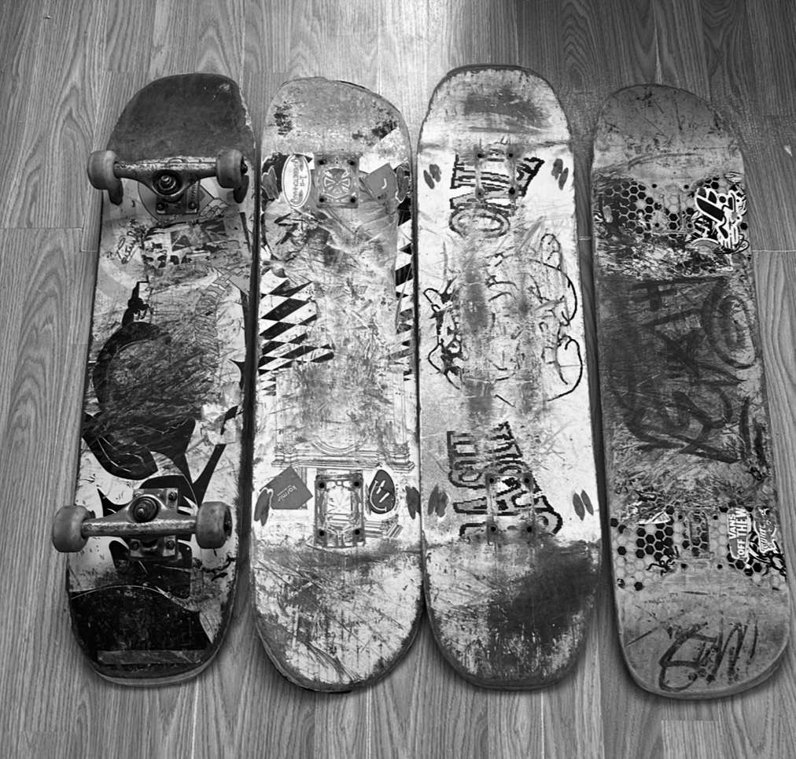
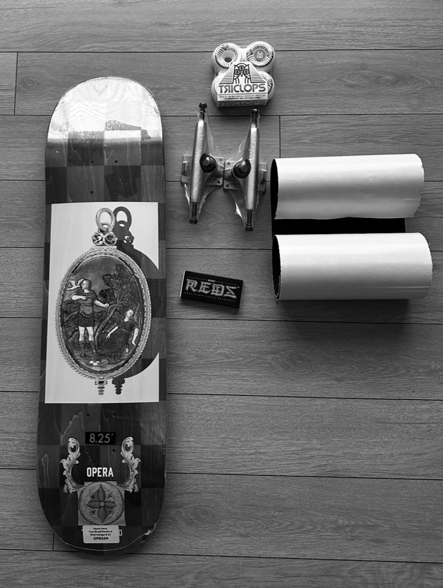

⌘
Technology
I enjoy computers from both sides: choosing hardware and understanding what happens underneath the interface.
I'm Erik — a student from Los Angeles who likes taking things apart, understanding how they work, and turning ideas into something real. Tech is the common thread: computers, code, keyboards, AI, design and games.
Not one single hobby — more like a constant need to learn, improve and make things better.
I enjoy computers from both sides: choosing hardware and understanding what happens underneath the interface.
Python, web development, React, Tauri and experiments that start as “what if I made this?”
I'm interested in AI engineering and want to understand how intelligent systems are actually built.
I like understanding computers at the lowest level — assembly, registers, memory, x86/x86-64 and development on Linux.
Games are another way I like getting immersed, competing and exploring different mechanics and playstyles.
A slower kind of competition: calculating, recognizing patterns and trying to improve one decision at a time.
From first pushes to competitions and brand shoots.
I started skating when I was 11. For the first three years I just pushed around without learning any tricks. Then I met one of the most popular skaters in the city. He gave me a new board and told me it was time to start learning. I promised him I would.
A week later I was covered in scars — but happy. The first tricks had started to land.
Over time I met new people. Each of them added something: advice, parts, energy. Then came summer 2024. I got invited to a competition. That day became one of the best of my life. In that atmosphere I found the courage to try things I never thought I could do. I left with a lot of emotions and real experience.
After that, local skate brands noticed me and invited me for shoots — for their social media and a magazine. From then on I started showing up at contests and events not as a spectator, but as a participant.
Started skating. Three years of just pushing around, no tricks yet.
A local skater gifted me a board and told me to start learning tricks. I did.
Best day of my life. Tried tricks I never thought possible.
Local brands noticed me. Started appearing as a participant, not a spectator.








Projects don't have to start perfect. They just have to start.
A compact desktop music experience inspired by glassmorphism — built around YouTube playback, track detection, playlists and a minimal interface.
Landing pages and experiments with modern UI, forms, responsive layouts and clean visual systems.
Building my own Linux-based operating system from the ground up — customizing the kernel, desktop environment and tools until it feels completely mine.
A personal voice assistant that listens, understands and helps control my PC — opening apps, running commands and handling everyday tasks hands-free.
A snapshot of what I'm working toward.
Build a stronger programming foundation and use it for practical projects.
Go from using AI tools to understanding and building AI-powered applications.
Turn experiments into polished software that other people can actually use.
School, coding, hardware, chess and everything else — one skill at a time.